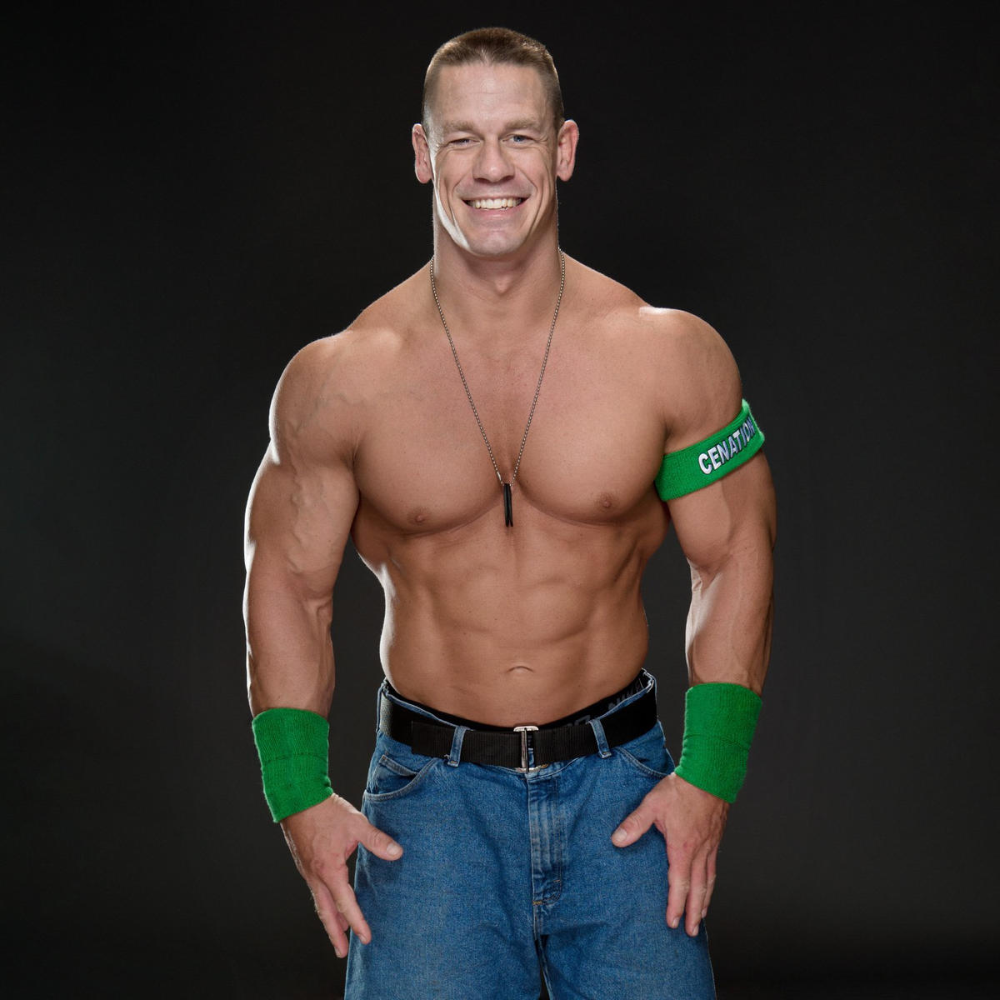

Джон Сіна (англ. John Cena) повне ім'я Джон Фелікс Ентоні Сіна, молодший (англ. John Felix Anthony Cena, Jr., народився 23 квітня 1977) — американський реслер, що виступає в WWE, автор і виконавець пісень у стилі хіп-хоп і реп, актор кіно.
Джон Сіна народився 23 квітня 1977 у Вест-Ньюбері, штат Массачусетс. Він другий із п'яти синів Керол Сіни і Джона Сіни, старшого. У коледжі грав у американський футбол. Він закінчив Спрінгфілдський коледж у 1999 році зі ступенем у галузі фізіології фізичних вправ і руху тіла, після чого продовжив кар’єру бодібілдингу і працював водієм лімузина. Сіна працював у магазині Gold's Gym за 6 доларів на годину.
Ultimate Pro Wrestling (2000—2001)
Для того, щоб стати професійним реслером, Джон Сіна почав тренування в 2000-му році в розташованому в Каліфорнії «Ultimate University» Коли Сіна почав виходити на ринг він узяв собі псевдонім Прототип (en. Prototype).
World Wrestling Entertainment / WWE
У 2001 році Джон Сіна підписує контракт з WWE, яка відправляє Сіну в Ohio Valley Wrestling(OVW) У складі OVW Сіна виступає під двома псевдонімами Прототип і Містер П. Тут же він завойовує титул чемпіона у важкій вазі OVW на три місяці і командного чемпіона OVW
Дебют (2002—2004)
Сіна дебютував на телебаченні, відповівши на відкритий виклик Курта Енгла 27 червня 2002. Продовжуючи проводити бої, в яких Сіна майже завжди вигравав, він поступово ставав улюбленцем фанатів і, почавши ворожнечу з Крісом Джеріко, переміг його на супершоу Vengeance.
Чемпіон США і чемпіон WWE (2004—2006)
На початку 2004 року Сіна взяв участь у королівській битві на супершоу Royal Rumble 2004, де залишився одним із 6 реслерів, які змагались на ринзі, поки Біг Шоу не видалив його з рингу. Видалення з королівської битви поклало початок ворожнечі з Біг шоу, яку Сіна виграв, завоювавши пояс чемпіона Сполучених Штатів на супершоу WrestleMania 20.
Сіна узяв участь у королівській битві на супершоу Royal Rumble 2005, у фіналі якого залишилися двоє. Сіна і Батіста перелетіли через канати одночасно, що зупинило матч. 6 червня 2005 року відбувся драфт, у результаті якого Сіна перейшов до бренду RAW. Він став першим реслером обраним генеральним менеджером Еріком Бішоффом.
На супершоу New Year's Revolution, яке пройшло 8 січня 2006 року, Сіна успішно захистив пояс у матчі клітка знищення, але після поєдинку був змушений захищати титул від переможця Money in the Bank — Еджа, який переміг після двох гарпунів і утримання. Однак за 3 тижні на супершоу Royal Rumble Сіна повернув собі титул чемпіона WWE.
Рекордний чемпіон WWE; інші ворожнечі (2011—2013)
На супершоу WrestleMania 28 у Джона був призначений матч проти Скелі, який був укладений приблизно рік тому. Ближче до WrestleMania обидва найпопулярніших реслера намагалися принизити один одного. Дуейн «Скеля» Джонсон критикував Джона щодо його особливої "розкрученості" в дитячих програмах. У відповідь на це, Джон заявив, що в цьому плані вони особливо не відрізняються, пригадавши фільм «Зубна фея», де Джонсон зіграв головну роль. На одному з шоу Сіна навіть з'явився у своєму старому образі Doctor of Thuganomics і прочитав реп про Дуейна. У відповідь, Дуейн пізніше з'явився з гітарою, загравши пісню, яку він назвав «Сіна відстій».
Цей матч став найбільш очікуваним матчем в історії WWE. Джон програв, зробивши помилку: він спробував провести коронний прийом Скелі народний лікоть, але потрапив під підніжжя скелі.
На супершоу Royal Rumble (2013) в однойменному матчі Джон Сіна вийшов на ринг під номером 19. Останнім Сіна перекинув через верхній канат Райбека і таким чином здобув перемогу, що гарантувало йому бій за чемпіонство WWE або за чемпіонство світу у важкій вазі. Джон Сіна вибрав змагатися з чемпіоном WWE Дуейном «Скелею» Джонсоном. На Реслманії 29 Джон Сіна переміг Скелю та став новим Чемпіоном WWE.
Кіно
WWE Studios (підрозділ WWE, яке фінансує і випускає художні фільми) зняла перший фільм за участю Джона Сіни — «Морський піхотинець», де він зіграв роль морського піхотинця, який після повернення зі служби додому, змушений застосувати отримані військові навички проти викрадачів своєї дружини. Прем'єра фільму в США відбулася 13 жовтня 2006 року і за перший тиждень прокату в цій країні зібрав майже 7 млн доларів. Після 10 тижнів прокату було зібрано 18,7 млн доларів США. Випущений на DVD фільм зібрав 30 млн доларів США за перші 12 тижнів продажів.
Другим фільмом Джона Сіни став «12 раундів», який також випустила WWE Studios. Зйомки почалися 25 лютого 2008 року в Новому Орлеані. Прем'єра фільму відбулася 27 березня 2009 року.
Сіна знявся в ще одному фільмі, який спродюсировала WWE Studios, під назвою «Legendary». Прем'єра фільму пройшла в обмеженому вигляді в обраних кінотеатрах 10 вересня 2010 року. Пізніше, 28 вересня 2010 року, фільм був випущений на DVD і Blu-ray дисках.
У тому ж році Сіна знявся в дитячому кіно «Fred: The Movie». Фільм заснований на відео з YouTube з участю Lucas Cruikshank. У цьому фільмі Джон Сіна зіграв батька підлітка. У вересні 2010 року фільм дебютував на каналі Nickelodeon.
Фільмографія
- Фільми у яких знімався Джон Сіна:
- Ready to Rumble (2000); укр. "Готовий до бою"
- The Marine (2006); укр. "Морський піхотинець"
- 12 Rounds (2009); укр. "12 раундів"
- The Hangover Part III (2013), укр. "Похмілля: Частина III"
- Bumblebee (2018); укр. "Бамблбі"
- Playing with Fire (2019); укр. Ігри з вогнем
- Fast & Furious 9 (2021); укр. "Форсаж 9: Нестримна сага"
- The Suicide Squad; укр. "Загін самогубців 2"
- Fast X; укр. "Форсаж 10"
- Шоу у яких був Джон Сіна (Телебачення)
- Saturday Night Live (2009-2016); укр. "Суботнього вечора в прямому ефірі"
- Hannah Montana (2010); укр. "Ханна Монтана; серія: «Love That Lets Go»"
- Peacemaker (2022); укр. "Миротворець"
Фото



Досягнення
| Рік | Pro Wrestling Illustrated | World Wrestling Entertainment | Wrestling Observer Newsletter awards |
|---|---|---|---|
| Загалом | Найпопулярніший реслер десятиліття (2000—2009) | Чемпіон WWE (13 разів) Чемпіон світу у важкій вазі (3 рази) Командний чемпіон світу WWE (2 рази) Командний чемпіон WWE (2 рази) Чемпіон Сполучених Штатів (5 разів) WWE ставить його під № 16 у списку 50 найкращих реслерів за всю історію WWE ставить його поєдинок проти Шона Майклза на Raw 23 квітня під № 1 у списку найкращих поєдинків в історії WWE на арені Raw WWE ставить його поєдинок проти СМ Панка на супершоу «Зірви банк» 2011 під № 4 у списку найкращих поєдинків за титул чемпіона WWE за всю історію |
WON ставить його під № 6 у списку 15 найкращих реслерів десятиліття (2000—2009) Найхаризматичніший реслер (2006-2010) |
| 2003 | Найбільш прогресуючий реслер року | Найкращий образ | |
| 2004 | Найпопулярніший реслер року | ||
| 2005 | Найпопулярніший реслер року | ||
| 2006 | Протистояння року проти Еджа Реслер року № 1 у списку 500 найкращих реслерів |
||
| 2007 | Поєдинок року проти Шона Майклза на Raw Найпопулярніший реслер року Реслер року № 1 у списку 500 найкращих реслерів |
Реслер року Найкраща знахідка офісу Найкращий в інтерв'ю |
|
| 2008 | Переможець «Королівської битви» | ||
| 2009 | Нагорода Слеммі «Суперзірка року» | ||
| 2010 | Нагорода Слеммі «Суперзірка року» | ||
| 2011 | Поєдинок року проти CM Панка на Money in the Bank | ||
| 2012 | Найпопулярніший реслер року | Містер «Зірви банк» Нагорода Слеммі «Суперзірка року» |
|
| 2013 | Поєдинок року проти Денієля Браяна на SummerSlam № 1 у списку 500 найкращих реслерів |
Переможець «Королівської битви» Нагорода Слеммі «Матч року» |
|
| 2014 | Поєдинок року проти Брея Ваятта «до останнього на ногах» на Payback | Нагорода Слеммі «Матч року» |